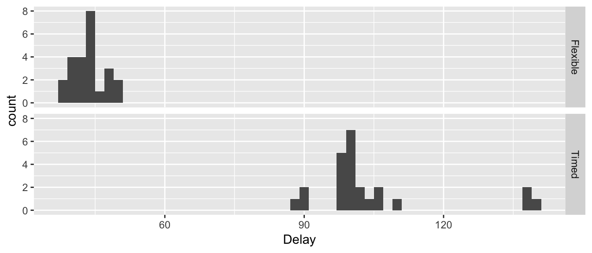

Chapter 7 Two-Sample Hypothesis Tests and Confidence Intervals
library(ggplot2)
library(dplyr)
library(tidyr)There are two broad classifications of types of research, observational studies and designed experiments. These two types of research differ in the way that the researcher interacts with the subjects being observed. In an observational study, the researcher doesn’t force a subject into some behavior or treatment, but merely observes the subject (making measurements but not changing behaviors). In contrast, in an experiment, the researcher imposes different treatments onto the subjects and the pairing between the subject and treatment group happens at random.
Example: For many years hormone (Estrogen and Progestin) replacement therapy’s primary use for post-menopausal woman was to reduce the uncomfortable side-effects of menopause but it was thought to also reduced the rate of breast cancer in post-menopausal women. This belief was the result of many observational studies where women who chose to take hormone replacement therapy also had reduced rates of breast cancer. The lurking variable that the observational studies missed was that hormone therapy is relatively expensive and was taken by predominately women of a high socio- economic status. Those women tended to be more health conscious, lived in areas with less pollution, and were generally at a lower risk for developing breast cancer. Even when researchers realized that socio-economic status was confounded with the therapy, they couldn’t be sure which was the cause of the reduced breast cancer rates. Two variables are said to be confounded if the design of a given experiment or study cannot distinguish the effect of one variable from the other. To correctly test this, nearly 17,000 women underwent an experiment in which each women was randomly assigned to take either the treatment (E+P) or a placebo. The Women’s Health Initiative (WHI) Estrogen plus Progestin Study (E+P) was stopped on July 7, 2002 (after an average 5.6 years of follow-up) because of increased risks of cardiovascular disease and breast cancer in women taking active study pills, compared with those on placebo (inactive pills). The study showed that the overall risks exceeded the benefits, with women taking E+P at higher risk for heart disease, blood clots, stroke, and breast cancer, but at lower risk for fracture and colon cancer. Lurking variables such as income levels and education are correlated to overall health behaviors and with an increased use of hormone replacement therapy. By randomly assigning each woman to a treatment, the unidentified lurking variables were evenly spread across treatments and the dangers of hormone replacement therapy were revealed.
In the previous paragraph, we introduced the idea of a lurking variable where a lurking variable is a variable the researcher hasn’t considered but affects the response variable. In observational studies a researcher will try to measure all the variables that might affect the response but will undoubtable miss something.
There is a fundamental difference between imposing treatments onto subjects versus taking a random sample from a population and observing relationships between variables. In general, designed experiments allow us to determine cause-and-effect relationships while observational studies can only determine if variables are correlated. This difference in how the data is generated will result in different methods for generating a sampling distribution for a statistic of interest. In this chapter we will focus on experimental designs, though the same analyses are appropriate for observational studies.
7.1 Difference in means between two groups
Often researchers will obtain a group of subjects and divide them into two groups, provide different treatments to each, and observe some response. The goal is to see if the two groups have different mean values, as this is the most common difference to be interested in.
The first thing to consider is that the group of subjects in our sample should be representative of a population of interest. Because we cannot impose an experiment on an entire population, we often are forced to examine a small sample and we hope that the sample statistics (the sample mean \(\bar{x}\), and sample standard deviation \(s\)) are good estimates of the population parameters (the population mean \(\mu\), and population standard deviation \(\sigma\)). First recognize that these are a sample and we generally think of them to be representative of some population.
Example: Finger Tapping and Caffeine
The effects of caffeine on the body have been well studied. In one experiment, a group of male college students were trained in a particular tapping movement and to tap at a rapid rate. They were randomly divided into caffeine and non-caffeine groups and given approximately two cups of coffee (with either 200 mg of caffeine or none). After a 2-hour period, the students tapping rate was measured.
The population that we are trying to learn about is male college-aged students and we the most likely question of interest is if the mean tap rate of the caffeinated group is different than the non-caffeinated group. Notice that we don’t particularly care about these 20 students, but rather the population of male college-aged students so the hypotheses we are interested in are \[\begin{aligned} H_{0}: \mu_{c} &= \mu_{nc} \\ H_{a}: \mu_{c} &\ne \mu_{nc} \end{aligned}\]
where \(\mu_{c}\) is the mean tap rate of the caffeinated group and \(\mu_{nc}\) is the mean tap rate of the non-caffeinated group. We could equivalently express these hypotheses via \[\begin{aligned} H_{0}: \mu_{nc}-\mu_{c} &= 0 \\ H_{a}: \mu_{nc}-\mu_{c} &\ne 0 \end{aligned}\]
Or we could let \(\delta=\mu_{nc}-\mu_{c}\) and write the hypotheses as \[\begin{aligned} H_{0}:\,\delta &= 0 \\ H_{a}:\,\delta &\ne 0 \end{aligned}\]
The data are available in many different formats at http://www.lock5stat.com/datapage.html
data(CaffeineTaps, package='Lock5Data') # load the data from the Lock5Data package
str(CaffeineTaps)## 'data.frame': 20 obs. of 2 variables:
## $ Taps : int 246 248 250 252 248 250 246 248 245 250 ...
## $ Group: Factor w/ 2 levels "Caffeine","NoCaffeine": 1 1 1 1 1 1 1 1 1 1 ...The first thing we should do is, as always, graph the data.
ggplot(CaffeineTaps, aes(x=Taps)) +
geom_dotplot( binwidth=.2) +
facet_grid( Group ~ . ) # two graphs stacked by Group (Caffeine vs non)
From this view, it looks like the caffeine group has a higher tapping rate. It will be helpful to summarize the difference between these two groups with a single statistic by calculating the mean for each group and then calculate the difference between the group means.
CaffeineTaps %>%
group_by(Group) %>% # group the summary stats by Treatment group
summarise(xbar=mean(Taps), s=sd(Taps))## # A tibble: 2 × 3
## Group xbar s
## <fctr> <dbl> <dbl>
## 1 Caffeine 248.3 2.213594
## 2 NoCaffeine 244.8 2.394438# No Caffeine - Caffeine
244.8 - 248.3## [1] -3.5CaffeineTaps %>% group_by(Group) %>%
summarise(xbar=mean(Taps)) %>%
summarise(d = diff(xbar))## # A tibble: 1 × 1
## d
## <dbl>
## 1 -3.5Notationally, lets call this statistic \(d=\bar{x}_{nc}-\bar{x}_{c}=-3.5\). We are interested in testing if this observed difference might be due to just random chance and we just happened to assigned more of the fast tappers to the caffeine group. How could we test the null hypothesis that the mean of the caffeinated group is different than the non-caffeinated?
7.1.1 Inference via resampling
The key idea is “How could the data have turned out if the null hypothesis is true?” If the null hypothesis is true, then the caffeinated/non-caffeinated group treatment had no effect on the tap rate and it was just random chance that the caffeinated group got a larger percentage of fast tappers. That is to say the group variable has no relationship to tap rate. I could have just as easily assigned the fast tappers to the non-caffeinated group purely by random chance. So our simulation technique is to shuffle the group labels and then calculate a difference between the group means!
We can perform this shuffling with the following code:
# shuffle(): takes an input column and reorders it randomly
CaffeineTaps %>% mutate(ShuffledGroup = mosaic::shuffle(Group))## Taps Group ShuffledGroup
## 1 246 Caffeine Caffeine
## 2 248 Caffeine Caffeine
## 3 250 Caffeine NoCaffeine
## 4 252 Caffeine NoCaffeine
## 5 248 Caffeine NoCaffeine
## 6 250 Caffeine Caffeine
## 7 246 Caffeine Caffeine
## 8 248 Caffeine NoCaffeine
## 9 245 Caffeine NoCaffeine
## 10 250 Caffeine NoCaffeine
## 11 242 NoCaffeine NoCaffeine
## 12 245 NoCaffeine Caffeine
## 13 244 NoCaffeine Caffeine
## 14 248 NoCaffeine NoCaffeine
## 15 247 NoCaffeine Caffeine
## 16 248 NoCaffeine NoCaffeine
## 17 242 NoCaffeine Caffeine
## 18 244 NoCaffeine Caffeine
## 19 246 NoCaffeine NoCaffeine
## 20 242 NoCaffeine CaffeineWe can then calculate the mean difference but this time using the randomly generated groups, and now the non-caffeinated group just happens to have a slightly higher mean tap rate just by the random sorting into two groups.
CaffeineTaps %>%
mutate( ShuffledGroup = mosaic::shuffle(Group) ) %>%
group_by( ShuffledGroup ) %>%
summarise(xbar=mean(Taps)) %>%
summarise(d.star = diff(xbar)) ## # A tibble: 1 × 1
## d.star
## <dbl>
## 1 2.1We could repeat this shuffling several times and see the possible values we might have seen if the null hypothesis is correct and the treatment group doesn’t matter at all.
mosaic::do(5) * {
CaffeineTaps %>%
mutate( ShuffledGroup = mosaic::shuffle(Group) ) %>%
group_by( ShuffledGroup ) %>%
summarise(xbar=mean(Taps)) %>%
summarise(d.star = diff(xbar))
}## d.star
## 1 0.3
## 2 -1.1
## 3 1.9
## 4 0.3
## 5 -0.1Of course, five times isn’t sufficient to understand the sampling distribution of the mean difference under the null hypothesis, we should do more.
PermutationDist <- mosaic::do(10000) * {
CaffeineTaps %>%
mutate( ShuffledGroup = mosaic::shuffle(Group) ) %>%
group_by( ShuffledGroup ) %>%
summarise(xbar=mean(Taps)) %>%
summarise(d.star = diff(xbar))
}ggplot(PermutationDist, aes(x=d.star)) +
geom_histogram(binwidth=.2) +
ggtitle('Permutation dist. of d* assuming H0 is true') +
xlab('d*')
We have almost no cases where the randomly assigned groups produced a difference as extreme as the actual observed difference of \(d=-3.5\). We can calculate the percentage of the sampling distribution of the difference in means that is farther from zero
PermutationDist %>%
mutate( MoreExtreme = ifelse( abs(d.star) >= 3.5, 1, 0)) %>%
summarise( p.value1 = sum(MoreExtreme)/n(), # these are all the
p.value2 = mean(MoreExtreme), # same calculation
p.value3 = mean( abs(d.star) >= 3.5 ) ) # but more verbose## p.value1 p.value2 p.value3
## 1 0.0058 0.0058 0.0058We see that only 58/10,000 simulations of data produced assuming \(H_{0}\) is true produced a \(d^{*}\) value more extreme than our observed difference in sample means so we can reject the null hypothesis \(H_{0}:\mu_{nc}-\mu_{c}=0\) in favor of the alternative \(H_{a}:\mu_{nc}-\mu_{c}\ne 0\) at an \(\alpha=0.05\) or any other reasonable \(\alpha\) level.
Everything we know about the biological effects of ingesting caffeine suggests that we should have expected the caffeinated group to tap faster, so we might want to set up our experiment so only faster tapping represents “extreme” data compared to the null hypothesis. In this case we want an alternative of \(H_{a}:\,\mu_{nc}-\mu_{c}<0\)? Therefore the null and alternative hypothesis are \[\begin{aligned} H_{0}:\,\mu_{nc}-\mu_{c} &\ge 0 \\ H_{a}:\,\mu_{nc}-\mu_{c} &< 0 \end{aligned}\] or using the parameter \(\delta=\mu_{nc}-\mu_{c}\) the null and alternative are \[\begin{aligned} H_{0}:\,\delta &\ge 0 \\ H_{a}:\,\delta & < 0 \end{aligned}\]
The creation of the sampling distribution of the mean difference \(d^*\) is identical to our previous technique because if our observed difference d is so negative that it is incompatible with the hypothesis that \(\delta=0\) then it must also be incompatible with any positive value of \(\delta\), so we evaluate the consistency of our data with the value of \(\delta\) that is closest to the observed d while still being true to the null hypothesis. Thus for either the the one-sided (i.e. \(\delta<0\)) or the two-sided case (i.e. \(\delta \ne 0\)), we generate the sampling distribution of \(d^*\) in the same way. The only difference in the analysis is at the end when we calculate the p-value and don’t consider the positive tail. That is, the p-value is the percent of simulations where \(d^*<d\).
PermutationDist %>%
summarize( p.value = mean( d.star <= -3.5 ))## p.value
## 1 0.0028and we see that the p-value is approximately cut in half by ignoring the upper tail, which makes sense considering the observed symmetry in the sampling distribution of \(d^*\).
In general, we prefer to use a two-sided test because if the two-sided test leads us to reject the null hypothesis then so would the appropriate one-sided hypothesis (except in the case where the alternative was chosen before the data was collected and the observed data was in the other tail). Second, by using a two-sample test, it prevents us from from “tricking” ourselves when we don’t know the which group should have a higher mean going into the experiment, but after seeing the data, thinking we should have known and using the less stringent test. Some statisticians go so far as to say that using a 1-sided test is outright fraudulent. Generally, we’ll concentrate on two-sided tests as they are the most widely acceptable.
Notice that the corresponding confidence interval gives a similar inference.
BootDist <- mosaic::do(10000)*{
CaffeineTaps %>%
group_by(Group) %>%
mosaic::resample() %>%
summarise( xbar=mean(Taps) ) %>%
summarise( d.star = diff(xbar) ) }ggplot(BootDist, aes(x=d.star)) +
geom_histogram(binwidth=.2) +
ggtitle('Bootstrap distribution of d*')
CI <- quantile( BootDist$d.star, probs=c(0.025, 0.975) )
CI## 2.5% 97.5%
## -5.400000 -1.515152Notice that the null hypothesis value, \(\delta=0\), is not a value supported by the data because 0 is not in the 95% confidence interval. A subtle point in the above bootstrap code is that I resampled each group separately. Because the experimental protocol was to have 10 in each group, then we want our simulated data sets should obey the same rule. Had I resampled first and then did the grouping, we might end up with 12 caffeinated and 8 un-caffeinated subjects, which is data that our experimental design couldn’t have generated.
7.1.2 Inference via asymptotic results (unequal variance assumption)
Previously we’ve seen that the Central Limit Theorem gives us a way to estimate the distribution of the sample mean. So it should be reasonable to assume that for our two groups (1=NonCaffeine, 2=Caffeine), \[\bar{X}_{1}\stackrel{\cdot}{\sim}N\left(\mu_{1},\, \frac{\sigma_{1}^{2}}{n_1}\right)\;\;\;\textrm{and}\;\;\;\bar{X}_{2}\stackrel{\cdot}{\sim}N\left(\mu_{2},\; \frac{\sigma_{2}^{2}}{n_2}\right)\]
It turns out that because \(\bar{X}_{C}\) and \(\bar{X}_{NC}\) both have approximately normal distributions, then the difference between them also does. This shouldn’t be too surprising after looking at the permutation and bootstrap distributions of the \(d^*\) values.
So our hypothesis tests and confidence interval routine will follow a similar pattern as our one-sample tests, but we now need to figure out the correct standardization formula for the difference in means. The only difficulty will be figuring out what the appropriate standard deviation term \(\hat{\sigma}_{D}\) should be.
Recall that if two random variables, A and B, are independent then \[Var\left(A-B\right)=Var(A)+Var(B)\] and therefore \[\begin{aligned} Var\left(D\right) &= Var\left(\bar{X}_{1}-\bar{X}_{2}\right) \\ &= Var\left(\bar{X}_{1}\right)+Var\left(\bar{X}_{2}\right) \\ &= \frac{\sigma_{1}^{2}}{n_{1}}+\frac{\sigma_{2}^{2}}{n_{2}} \end{aligned}\] and finally we have \[StdErr\left(D\right)=\sqrt{\frac{s_{1}^{2}}{n_{1}}+\frac{s_{2}^{2}}{n_{2}}}\] and therefore my standardized value for the difference will be \[\begin{aligned} t_{???} &= \frac{\textrm{estimate}\,\,\,-\,\,\,\textrm{hypothesized value}}{StdErr\left(\,\,\textrm{estimate}\,\,\right)} \\ &= \frac{\left(\bar{x}_{1}-\bar{x}_{2}\right)-0}{\sqrt{\frac{s_{1}^{2}}{n_{1}}+\frac{s_{2}^{2}}{n_{2}}}} \\ &= \frac{\left(-3.5\right)-0}{\sqrt{\frac{2.39^{2}}{10}+\frac{2.21^{2}}{10}}} \\ &= -3.39 \end{aligned}\]
This is somewhat painful, but reasonable. The last question is what t-distribution should we compare this to? Previously we’ve used \(df=n-1\) but now we have two samples. So our degrees of freedom ought to be somewhere between \(\min\left(n_{1},n_{2}\right)-2=8\) and \(\left(n_{1}+n_{2}\right)-1=19\).
There is no correct answer, but the best approximation to what it should be is called Satterwaite’s Approximation. \[df=\frac{\left(V_{1}+V_{2}\right)^{2}}{\frac{V_{1}^{2}}{n_{1}-1}+\frac{V_{2}^{2}}{n_{2}-1}}\] where \[V_{1}=\frac{s_{1}^{2}}{n_{1}}\;\;\textrm{and }\;\;V_{2}=\frac{s_{2}^{2}}{n_{2}}\]
So for our example we have
\[V_{1}=\frac{2.39^{2}}{10}=0.5712\;\;\;\textrm{and}\;\;\;V_{2}=\frac{2.21^{2}}{10}=0.4884\] and \[df=\frac{\left(0.5712+0.4884\right)^{2}}{\frac{\left(0.5712\right)^{2}}{9}+\frac{\left(0.4884\right)^{2}}{9}}=17.89\]
So now we can compute our p-value as
\[\textrm{p.value}=P\left(T_{17.89}<-3.39\right)\]
mosaic::xpt(-3.39, df=17.89)
## [1] 0.00164277In a similar fashion, we can calculate the confidence interval in our usual fashion
\[\begin{aligned} \textrm{Est}\;\; &\pm\; t_{???}^{1-\alpha/2}\;\textrm{StdErr}\left(\;\textrm{Est}\;\right) \\ \left(\bar{x}_{1}-\bar{x}_{2}\right) &\pm t_{17.89}^{1-\alpha/2}\sqrt{\frac{s_{1}^{2}}{n_{1}}+\frac{s_{2}^{2}}{n_{2}}} \\ -3.5 &\pm 2.10\sqrt{\frac{2.39^{2}}{10}+\frac{2.21^{2}}{10}} \\ -3.5 &\pm 2.16 \end{aligned}\]
\[\left(-5.66,\;-1.34\right)\]
It is probably fair to say that this is an ugly calculation to do by hand. Fortunately it isn’t too hard to make R do these calculations for you. The function t.test() will accept two arguments, a vector of values from the first group and a vector from the second group.
##### Using the base function t.test
# Caffeine <- CaffeineTaps$Taps[ 1:10] # first 10 are Caffeine
# NonCaffeine <- CaffeineTaps$Taps[11:20] # last 10 are non-Caffeine
# t.test( NonCaffeine, Caffeine )
# Using the mosaic version that allows me to give it a formula
mosaic::t.test(Taps ~ Group, data=CaffeineTaps)##
## Welch Two Sample t-test
##
## data: Taps by Group
## t = 3.3942, df = 17.89, p-value = 0.003255
## alternative hypothesis: true difference in means is not equal to 0
## 95 percent confidence interval:
## 1.332616 5.667384
## sample estimates:
## mean in group Caffeine mean in group NoCaffeine
## 248.3 244.87.1.3 Inference via asymptotic results (equal variance assumption)
In the CaffeineTaps example, the standard deviations of each group are quite similar. Instead of thinking of the data as \[\bar{X}_{1}\stackrel{\cdot}{\sim}N\left(\mu_{1},\,\frac{\sigma_{1}^{2}}{n_1}\right)\;\;\;\textrm{and}\;\;\;\bar{X}_{2}\stackrel{\cdot}{\sim}N\left(\mu_{2},\;\frac{\sigma_{2}^{2}}{n_2}\right)\] we could consider the model where we assume that the variance term is the same for each sample. \[\bar{X}_{1}\stackrel{\cdot}{\sim}N\left(\mu_{1},\,\frac{\sigma^{2}}{n_1}\right)\;\;\;\textrm{and}\;\;\;\bar{X}_{2}\stackrel{\cdot}{\sim}N\left(\mu_{2},\; \frac{\sigma^{2}}{n_2}\right)\]
First, we can estimate \(\mu_{1}\) and \(\mu_{2}\) with the appropriate sample means \(\bar{x}_{1}\) and \(\bar{x}_{2}\). Next we need to calculate an estimate of \(\sigma\) using all of the data. First recall the formula for the sample variance for one group was \[s^{2}=\frac{1}{n-1}\left[\sum_{j=1}^{n}\left(x_{j}-\bar{x}\right)^{2}\right]\]
In the case with two samples, we want a similar formula but it should take into account data from both sample groups. Define the notation \(x_{1j}\) to be the \(j\)th observation of group 1, and \(x_{2j}\) to be the \(j\)th observation of group 2 and in general \(x_{ij}\) as the \(j\)th observation from group \(i\). We want to subtract each observation from the its appropriate sample mean and then, because we had to estimate two means, we need to subtract two degrees of freedom from the denominator. \[\begin{aligned} s_{pooled}^{2} &= \frac{1}{n_{1}+n_{2}-2}\left[\sum_{j=1}^{n_{1}}\left(x_{1j}-\bar{x}_{1}\right)^{2}+\sum_{j=1}^{n_{2}}\left(x_{2j}-\bar{x}_{2}\right)^{2}\right] \\ &= \frac{1}{n_{1}+n_{2}-2}\left[\sum_{j=1}^{n_{1}}e_{1j}^{2}+\sum_{j=1}^{n_{2}}e_{2j}^{2}\right]\\ &= \frac{1}{n_{1}+n_{2}-2}\left[\sum_{i=1}^{2}\sum_{j=1}^{n_{i}}e_{ij}^{2}\right] \end{aligned}\]
where \(\bar{x}_{1}\) and \(\bar{x}_{2}\) are the sample means and \(e_{ij}=x_{ij}-\bar{x}_{i}\) is the residual error of the \(i,j\) observation. A computationally convenient formula for this same quantity is \[s_{pooled}^{2}=\frac{1}{n_{1}+n_{2}-2}\left[\left(n_{1}-1\right)s_{1}^{2}+\left(n_{2}-1\right)s_{2}^{2}\right]\]
Finally we notice that this pooled estimate of the variance term \(\sigma^{2}\) has \(n_{1}+n_{2}-2\) degrees of freedom. One benefit of the pooled procedure is that we don’t have to mess with the Satterthwaite’s approximate degrees of freedom.
Recall our test statistic in the unequal variance case was \[t_{???} =\frac{\left(\bar{x}_{1}-\bar{x}_{2}\right)-0}{\sqrt{\frac{s_{1}^{2}}{n_{1}}+\frac{s_{2}^{2}}{n_{2}}}}\] but in the equal variance case, we will use the pooled estimate of the variance term \(s_{pooled}^{2}\) instead of \(s_{1}^{2}\) and \(s_{2}^{2}\). So our test statistic becomes
\[\begin{aligned} t_{df=n_{1}+n_{2}-2} &= \frac{\left(\bar{x}_{1}-\bar{x}_{2}\right)-0}{\sqrt{\frac{s_{pool}^{2}}{n_{1}}+\frac{s_{pool}^{2}}{n_{2}}}} \\ &= \frac{\left(\bar{x}_{1}-\bar{x}_{2}\right)-0}{s_{pool}\sqrt{\frac{1}{n_{1}}+\frac{1}{n_{2}}}} \end{aligned}\]
where we have \[StdErr\left(\bar{X}_{1}-\bar{X}_{2}\right)=s_{pooled}\sqrt{\left(1/n_{1}\right)+\left(1/n_{2}\right)}\] For the CaffeineTaps data, this results in the following analysis for \[\begin{aligned} H_{0}: &\mu_{nc}-\mu_{c} = 0 \\ H_{a}: &\mu_{nc}-\mu_{c} \ne 0 \end{aligned}\]
First we have to calculate the summary statistics (along with the pooled \(\sigma_{pooled}\)).
CaffeineTaps %>%
group_by(Group) %>%
summarise(xbar.i = mean(Taps), # sample mean for each group
s2.i = var(Taps), # sample variances for each group
s.i = sd(Taps), # sample standard deviations for each group
n.i = n() ) # sample sizes for each group## # A tibble: 2 × 5
## Group xbar.i s2.i s.i n.i
## <fctr> <dbl> <dbl> <dbl> <int>
## 1 Caffeine 248.3 4.900000 2.213594 10
## 2 NoCaffeine 244.8 5.733333 2.394438 10CaffeineTaps %>%
group_by(Group) %>%
summarize( n.i = n(),
s2.i = var(Taps) ) %>%
summarize( s2.p = sum( (n.i-1)*s2.i ) / ( sum(n.i)-2 ),
s.p = sqrt(s2.p) ) ## # A tibble: 1 × 2
## s2.p s.p
## <dbl> <dbl>
## 1 5.316667 2.30579Next we can calculate \[t_{18}=\frac{\left(244.8-248.3\right)-0}{2.31\sqrt{\frac{1}{10}+\frac{1}{10}}}=-3.39\]
p.value <- 2 * pt(-3.39, df=18) # 2-sided test, so multiply by 2
p.value## [1] 0.003262969The associated \(95\%\) confidence interval is \[\left(\bar{x}_{1}-\bar{x}_{2}\right)\pm t_{n_{1}+n_{2}-2}^{1-\alpha/2}\;\left(s_{pool}\sqrt{\frac{1}{n_{1}}+\frac{1}{n_{2}}}\right)\]
qt( .975, df=18 ) ## [1] 2.100922\[\begin{aligned} -3.5 &\pm 2.10\left(\,2.31\sqrt{\frac{1}{10}+\frac{1}{10}}\right) \\ -3.5 &\pm 2.17 \end{aligned}\] \[\left(-5.67,\;-1.33\right)\]
This p-value and \(95\%\) confidence interval are quite similar to the values we got in the case where we assumed unequal variances.
As usual, these calculations are pretty annoying to do by hand and we wish to instead do them using R. Again the function t.test() will do the annoying calculations for us.
# Do the t-test
mosaic::t.test( Taps ~ Group, data=CaffeineTaps, var.equal=TRUE ) ##
## Two Sample t-test
##
## data: Taps by Group
## t = 3.3942, df = 18, p-value = 0.003233
## alternative hypothesis: true difference in means is not equal to 0
## 95 percent confidence interval:
## 1.33357 5.66643
## sample estimates:
## mean in group Caffeine mean in group NoCaffeine
## 248.3 244.8# Do the t-test
mosaic::t.test( Taps ~ Group, data=CaffeineTaps, var.equal=TRUE, conf.level=.99 ) ##
## Two Sample t-test
##
## data: Taps by Group
## t = 3.3942, df = 18, p-value = 0.003233
## alternative hypothesis: true difference in means is not equal to 0
## 99 percent confidence interval:
## 0.5318082 6.4681918
## sample estimates:
## mean in group Caffeine mean in group NoCaffeine
## 248.3 244.8Example - Does drinking beer increase your attractiveness to mosquitos?
In places in the country substantial mosquito populations, the question of whether drinking beer causes the drinker to be more attractive to the mosquitoes than drinking something else has plagued campers. To answer such a question, researchers conducted a study to determine if drinking beer attracts more mosquitoes than drinking water. Of \(n=43\) subjects, \(n_{b}=25\) drank a liter beer and \(n_{w}=18\) drank a liter of water and mosquitoes were caught in traps as they approached the different subjects. The critical part of this study is that the treatment (beer or water) was randomly assigned to each subject.
For this study, we want to test \[H_{0}:\:\delta=0\;\;\;\;\;\;\textrm{vs}\;\;\;\;\;\;H_{a}:\,\delta<0\] where we define \(\delta=\mu_{w}-\mu_{b}\) and \(\mu_{b}\) is the mean number of mosquitoes attracted to a beer drinker and \(\mu_{w}\) is the mean number attracted to a water drinker. As usual we begin our analysis by plotting the data.
# I can't find this dataset on-line so I'll just type it in.
Mosquitoes <- data.frame(
Number = c(27,19,20,20,23,17,21,24,31,26,28,20,27,
19,25,31,24,28,24,29,21,21,18,27,20,
21,19,13,22,15,22,15,22,20,
12,24,24,21,19,18,16,23,20),
Treat = c( rep('Beer', 25), rep('Water',18) ) )
# Plot the data
ggplot(Mosquitoes, aes(x=Number)) +
geom_histogram(binwidth=1) +
facet_grid( Treat ~ . )
For this experiment and the summary statistic that captures the difference we are trying to understand is \(d=\bar{x}_{w}-\bar{x}_{b}\) where \(\bar{x}_{w}\) is the sample mean number of mosquitoes attracted by the water group and \(\bar{x}_{b}\) is the sample mean number of mosquitoes attracted by the beer group. Because of the order we chose for the subtraction, a negative value for d is supportive of the alternative hypothesis that mosquitoes are more attracted to beer drinkers.
Mosquitoes %>% group_by(Treat) %>%
summarise(xbar.i = mean(Number),
s2.i = var(Number),
s.i = sd(Number),
n.i = n())## # A tibble: 2 × 5
## Treat xbar.i s2.i s.i n.i
## <fctr> <dbl> <dbl> <dbl> <int>
## 1 Beer 23.60000 17.08333 4.133199 25
## 2 Water 19.22222 13.47712 3.671120 18Here we see that our statistic of interest is \[\begin{aligned} d &= \bar{x}_{w}-\bar{x}_{b} \\ &= 19.22-23.6 \\ &= -4.37\bar{7} \end{aligned}\] The hypothesis test and confidence interval to see if this is statistically significant evidence to conclude that beer increases attractiveness to mosquitos is as follows. First we perform the hypothesis test by creating the sampling distribution of \(d^*\) assuming \(H_0\) is true by repeatedly shuffling the group labels and calculating differences.
PermutationDist <- mosaic::do(10000) *{
Mosquitoes %>%
mutate(ShuffledTreat = mosaic::shuffle(Treat)) %>%
group_by( ShuffledTreat ) %>%
summarise( xbar.i = mean(Number) ) %>%
summarise( d.star = diff(xbar.i) )
}ggplot(PermutationDist, aes(x=d.star)) +
geom_histogram(binwidth=.5) +
ggtitle('Sampling Dist. of d* assuming H0 is true')
p.value <- PermutationDist %>%
summarise( mean( d.star <= -4.377 ))
p.value## mean(d.star <= -4.377)
## 1 2e-04The associated confidence interval (lets do a \(90\%\) confidence level), is created via bootstrapping.
BootDist <- mosaic::do(10000)*{
Mosquitoes %>%
group_by(Treat) %>%
mosaic::resample() %>%
summarise( xbar.i = mean(Number) ) %>%
summarise( d.star = diff(xbar.i) )
}ggplot(BootDist, aes(x=d.star)) +
geom_histogram(binwidth=.5) +
ggtitle('Bootstrap dist. of d*')
quantile( BootDist$d.star, probs=c(.05, .95))## 5% 95%
## -6.336262 -2.449065The calculated p-value is extremely small and the associated two-sided 90% confidence interval does not contain 0, so we can conclude that the choice of drink does cause a change in attractiveness to mosquitoes.
If we wanted to perform the same analysis using asymptotic methods we could do the calculations by hand, or just use R.
mosaic::t.test( Number ~ Treat, data=Mosquitoes,
var.equal=TRUE, conf.level=0.90)##
## Two Sample t-test
##
## data: Number by Treat
## t = 3.587, df = 41, p-value = 0.0008831
## alternative hypothesis: true difference in means is not equal to 0
## 90 percent confidence interval:
## 2.323889 6.431666
## sample estimates:
## mean in group Beer mean in group Water
## 23.60000 19.22222Notice that we didn’t specify the order for the subtraction and the mosaic:t.test() function did the subtraction in the opposite order than we did. The p-value is slightly different but doesn’t change the resulting inference.
7.2 Difference in means between two groups: Paired Data
If the context of study is such that we can logically pair an observation from the first population to a particular observation in the second, then we can perform what is called a Paired Test. In a paired test, we will take each set of paired observations, calculate the difference, and then perform a 1-sample regular hypothesis test on the differences.
For example, in the package Lock5Data there is a dataset that examines the age in which men and women get married. The data was obtained by taking a random sample from publicly available marriage licenses in St. Lawrence County, NY.
data(MarriageAges, package='Lock5Data')
head(MarriageAges)## Husband Wife
## 1 53 50
## 2 38 34
## 3 46 44
## 4 30 36
## 5 31 23
## 6 26 31Unfortunately the format of this dataset is not particularly convenient for making graphs. Instead I want to turn this data into a “long” dataset where I have one row per person, not one row per marraige.
# Make a dataset that is more convenient for graphing.
MarriageAges.Long <- MarriageAges %>%
mutate(Marriage = factor(1:n())) %>% # Give each row a unique ID
gather('Spouse', 'Age', Husband, Wife) %>% # pivot from Husband/Wife to Spouse/Age
arrange(Marriage, desc(Spouse)) # Sort by Marriage, then (Wife,Husband)# Make a graph of ages, by Spouse Type
ggplot(MarriageAges.Long, aes(x=Age)) +
geom_histogram(binwidth=5) +
facet_grid(Spouse ~ .) 
Looking at this view of the data, it doesn’t appear that the husbands tend to be older than the wives. A t-test to see if the average age of husbands is greater than the average age of wives gives an insignificant difference.
mosaic::t.test( Age ~ Spouse, data=MarriageAges.Long )##
## Welch Two Sample t-test
##
## data: Age by Spouse
## t = 1.8055, df = 203.12, p-value = 0.07248
## alternative hypothesis: true difference in means is not equal to 0
## 95 percent confidence interval:
## -0.2603887 5.9175316
## sample estimates:
## mean in group Husband mean in group Wife
## 34.66667 31.83810# t.test( MarriageAges$Husband, MarriageAges$Wife ) # Another way to run the t.testBut critically, we are ignoring that while the average ages might not be different, for a given marriage, the husband tends to be older than the wife. Instead of looking at the difference in the means (i.e \(d=\bar{h}-\bar{w}\)) we should actually be looking at the mean of the differences \(\bar{d}=\frac{1}{n}\sum d_{i}\) where \(d_{i}=h_{i}-w_{i}\).
MarriageAges <- MarriageAges %>%
mutate( d = Husband - Wife )
ggplot(MarriageAges, aes(x = d)) +
geom_histogram(binwidth=2)
Given this set of differences, we’d like to know if this data is compatible with the null hypothesis that husbands and wives tend to be the same age versus the alternative that husbands tend to be older. (We could chose the two-sided test as well). \[\begin{aligned} H_{0}:\;\delta &= 0 \\ H_{A}:\;\delta &> 0 \end{aligned}\]
Because we have reduced our problem to a 1-sample test, we can perform the asymptotic t-test easily enough in R.
t.test( MarriageAges$d )##
## One Sample t-test
##
## data: MarriageAges$d
## t = 5.8025, df = 104, p-value = 7.121e-08
## alternative hypothesis: true mean is not equal to 0
## 95 percent confidence interval:
## 1.861895 3.795248
## sample estimates:
## mean of x
## 2.828571#t.test( MarriageAges$Husband, MarriageAges$Wife, paired=TRUE ) # Another way to run the t.testThe result is highly statistically significant, and we see the mean difference in ages for the husband to be 2.8 years older.
To perform the same analysis using resampling methods, we need to be careful to do the resampling correctly. To perform the hypothesis test, we want to create data where the null hypothesis is true. To do this, we’ll shuffle the ages within the marriage so that the husband and the wife have equal probability of being the older spouse. For the bootstrap CI, we need to be certain that we are resampling marriages, not people.
# Permutation t-test of delta == 0
PermDist <- mosaic::do(10000)*{
MarriageAges.Long %>%
group_by(Marriage) %>%
mutate(Age = mosaic::shuffle(Age)) %>% # shuffle the ages within each marriage
summarize(d.i = diff(Age)) %>% # Calc Husband - Wife age difference
summarize(d.bar = mean(d.i)) # calc the mean difference
}
ggplot(PermDist, aes(x=d.bar)) +
geom_histogram()## `stat_bin()` using `bins = 30`. Pick better value with `binwidth`.
PermDist %>%
summarize( p.value = mean(d.bar >= 2.83) )## p.value
## 1 0# Bootstrap CI for delta
BootDist <- mosaic::do(10000)*{
MarriageAges.Long %>%
group_by(Marriage) %>%
summarize(d.i = diff(Age)) %>% # Calc observed Husband - Wife age differences
mosaic::resample() %>% # resample from the observed differences
summarize(d.bar = mean(d.i)) # calc the mean difference
}
quantile( BootDist$d.bar, probs=c(0.025, 0.975) )## 2.5% 97.5%
## 1.895238 3.809524We observe a similar p-value and confidence interval as we did using the asymptotic test as expected. The code for calculating the bootstrap CI is a bit inefficient because I keep recalculating the observed differences with each bootstrap. However, it is nice to have the code “recipe” for the hypothesis test and the associated CI to be fairly similar.
Example - Traffic Flow
Engineers in Dresden, Germany were looking at ways to improve traffic flow by enabling traffic lights to communicate information about traffic flow with nearby traffic lights and modify their timing sequence appropriately. The engineers wished to compare new flexible timing system with the standard fixed timing sequence by evaluating the delay at a randomly selected \(n=24\) intersections in Dresden. The data show results of one experiment where they simulated buses moving along a street and recorded the delay time for both systems. Because each simulation is extremely intensive, they only simulated \(n=24\) intersections instead of simulating the whole city.
data(TrafficFlow, package='Lock5Data')
head(TrafficFlow)## Timed Flexible Difference
## 1 88 45 43
## 2 90 46 44
## 3 91 45 46
## 4 99 51 48
## 5 101 48 53
## 6 101 48 53# A data set more convenient for Graphing and Permutation Tests.
TrafficFlow.Long <- TrafficFlow %>%
mutate(Light = factor(1:n())) %>% # Give each row a unique ID
gather('Seq', 'Delay', Flexible, Timed) %>% # pivot to SequenceType and Delay amount
arrange(Light, Seq) # Sort by Light, then by SequenceType
head(TrafficFlow.Long)## Difference Light Seq Delay
## 1 43 1 Flexible 45
## 2 43 1 Timed 88
## 3 44 2 Flexible 46
## 4 44 2 Timed 90
## 5 46 3 Flexible 45
## 6 46 3 Timed 91As usual, we’ll first examine the data with a graph.
ggplot(TrafficFlow.Long, aes(x=Delay)) +
geom_histogram(binwidth=2) + # histograms of Delay time
facet_grid(Seq ~ .) # two plots, stacked by SequenceType
ggplot(TrafficFlow, aes(x=Difference)) +
geom_histogram(binwidth=2) +
ggtitle('Difference (Standard - Flexible)')
All of the differences were positive, so it is almost ridiculous to do a hypothesis test that there is no decrease in delays with the flexible timing system, but we might as well walk through the analysis.
t.test( TrafficFlow$Difference )##
## One Sample t-test
##
## data: TrafficFlow$Difference
## t = 19.675, df = 23, p-value = 6.909e-16
## alternative hypothesis: true mean is not equal to 0
## 95 percent confidence interval:
## 54.58639 67.41361
## sample estimates:
## mean of x
## 61# Permutation t-test of delta == 0
PermDist <- mosaic::do(10000)*{
TrafficFlow.Long %>%
group_by(Light) %>%
mutate(Delay = mosaic::shuffle(Delay)) %>% # shuffle the delays within each intersection
arrange(Light, Seq) %>% # Put into the Flexible, SeqType order
summarize(d.i = diff(Delay)) %>% # Calc Timed - Flexible delay difference
summarize(d.bar = mean(d.i)) # calc the mean difference
}
PermDist %>%
summarize( p.value = mean(d.bar >= 61) )## p.value
## 1 0Our p-value is 0, but because we we actually only did 10,000 permutations, the most we can say is that the p-value is less than 1/ 10,000.
# Bootstrap CI for delta
BootDist <- mosaic::do(10000)*{
TrafficFlow.Long %>%
group_by(Light) %>%
summarize(d.i = diff(Delay)) %>% # Calc observed Timed-Flexible delay differences
mosaic::resample() %>% # resample from the observed differences
summarize(d.bar = mean(d.i)) # calc the mean difference
}
quantile( BootDist$d.bar, probs=c(0.025, 0.975) )## 2.5% 97.5%
## 55.54167 67.33333The confidence interval suggests that these data support that the mean difference between the flexible timing sequence versus the standard fixed timing sequence in Dresden is in the interval \(\left(55.5,\,67.3\right)\) seconds.
7.3 Exercises
- In the 2011 article “Methane contamination of drinking water accompanying gas-well drilling and hydraulic fracturing” in the Proceedings of the National Academy of Sciences, \(n_{1}=21\) sites in proximity to a fracking well had a mean methane level of \(\bar{x}_{1}=19.2\) mg \(CH_{4} L^{-1}\) with a sample standard deviation \(s_{1}=30.3\). The \(n_{2}=13\) sites in the same region with no fracking wells within 1 kilometer had mean methane levels of \(\bar{x}_{2}=1.1\) mg \(CH_{4} L^{-1}\) and standard deviation \(s_{2}=6.3\). Perform a one-sided, two-sample t-test with unpooled variance and an \(\alpha=0.05\) level to investigate if the presence of fracking wells increases the methane level in drinking-water wells in this region. Notice that because I don’t give you the data, you can only analyze the data using the asymptotic method and plugging in the give quantities into the formulas presented.
- State an appropriate null and alternative hypothesis. (Be sure to use correct notation!)
- Calculate an appropriate test statistic (making sure to denote the appropriate degrees of freedom, if necessary).
- Calculate an appropriate p-value.
- At an significance level of \(\alpha=0.05\), do you reject or fail to reject the null hypothesis?
- Restate your conclusion in terms of the problem.
- All persons running for public office must report the amount of money raised and spent during their campaign. Political scientists contend that it is more difficult for female candidates to raise money. Suppose that we randomly sample \(30\) male and \(30\) female candidates for state legislature and observe the male candidates raised, on average, \(\bar{y}=\$350,000\) with a standard deviation of \(s_{y}=\$61,900\) and the females raised on average \(\bar{x}=\$245,000\) with a standard deviation of \(s_{x}=\$52,100\). Perform a one-sided, two-sample t-test with pooled variance to test if female candidates generally raise less in their campaigns that male candidates. Notice that because I don’t give you the data, you can only analyze the data using the asymptotic method and plugging in the give quantities into the formulas presented.
- State an appropriate null and alternative hypothesis. (Be sure to use correct notation!)
- Calculate an appropriate test statistic (making sure to denote the appropriate degrees of freedom, if necessary).
- Calculate an appropriate p-value.
- At an significance level of \(\alpha=0.05\), do you reject or fail to reject the null hypothesis?
- Restate your conclusion in terms of the problem.
- In the Lock5Data package, the dataset
Smilesgives data “…from a study examining the effect of a smile on the leniency of disciplinary action for wrongdoers. Participants in the experiment took on the role of members of a college disciplinary panel judging students accused of cheating. For each suspect, along with a description of the offense, a picture was provided with either a smile or neutral facial expression. Note, that for each individual only one picture was submitted. A leniency score was calculated based on the disciplinary decisions made by the participants.”- Graph the leniency score for the smiling and non-smiling groups. Comment on if you can visually detect any difference in leniency score.
- Calculate the mean and standard deviation of the leniencies for each group. Does it seem reasonable that the standard deviation of each group is the same?
- Do a two-sided two-sample t-test using pooled variance using the asymptotic method. Report the test statistic, p-value, and a \(95\%\) CI.
- Do a two-side two-sample t-test using resampling methods. Report the p-value and a \(95\%\) CI.
- What do you conclude at an \(\alpha=0.05\) level? Do you feel we should have used a more stringent \(\alpha\) level?
In the Lock5Data package, the dataset
StorySpoilersis data from an experiment where the researchers are testing if a “spoiler” at the beginning of a short story negatively affects the enjoyment of the story. A set of \(n=12\) stories were selected and a spoiler introduction was created. Each version of each story was read by at least \(30\) people and rated. Reported are the average ratings for the spoiler and non-spoiler versions of each story. The following code creates the “long” version of the data.library(dplyr) library(tidyr) data(StorySpoilers, package='Lock5Data') StorySpoilers.Long <- StorySpoilers %>% gather('Type', 'Rating', Spoiler, Original) %>% mutate( Story = factor(Story), # make Story and Type into Type = factor(Type) ) %>% # categorical variables arrange(Story)- Based on the description, a 1-sided test is appropriate. Explain why.
- Graph the ratings for the original stories and the modified spoiler version. Comment on if you detect any difference in ratings between the two.
- Graph the difference in ratings for each story. Comment on if the distribution of the differences seems to suggest that a spoiler lowers the rating.
- Do a paired one-sided t-test using the asymptotic method. Also calculate a \(95\%\) confidence interval.
- Do a paired one-sided t-test using the permutation method. Also calculate a \(95\%\) confidence interval using the bootstrap.
- Based on your results in parts (d) and (e), what do you conclude?
In the Lock5Data package, the dataset
Wetsuitsdescribes an experiment with the goal of quantifying the effect of wearing a wetsuit on the speed of swimming. (It is often debated among triathletes whether or not to wear a wetsuit when it is optional.) A set of \(n=12\) swimmers and triathletes did a 1500 m swim in both the wetsuit and again in regular swimwear. The order in which they swam (wetsuit first or non-wetsuit first) was randomized for each participant. Reported is the maximum velocity during each swim.# Code for creating the "long" version of the data library(dplyr) library(tidyr) data('Wetsuits', package='Lock5Data') Wetsuits.Long <- Wetsuits %>% mutate(Participant = factor(1:12) ) %>% gather('Suit', 'MaxVelocity', Wetsuit,NoWetsuit) %>% arrange( Participant, Suit) %>% mutate(Suit = factor(Suit))- Why did the researcher randomize which suit was worn first?
- Plot the velocities for the wetsuit and non-wetsuit for each participant. Comment on if you detect any difference in the means of these two distributions.
- Ignore the pairing and do a two-sided two-sample t-test using the asymptotic method. What would you conclude doing the t-test this way?
- Plot the difference in velocity for each swimmer. Comment on if the observed difference in velocity seems to indicate that which should be preferred (wetsuit or non-wetsuit).
- Do a paired two-sided t-test using the asymptotic method. Also calculate the 95% confidence interval. What do you conclude?
- Do a paired two-sided t-test using the permutation method. Also calculate the 95% confidence interval using the bootstrap method. What do you conclude?